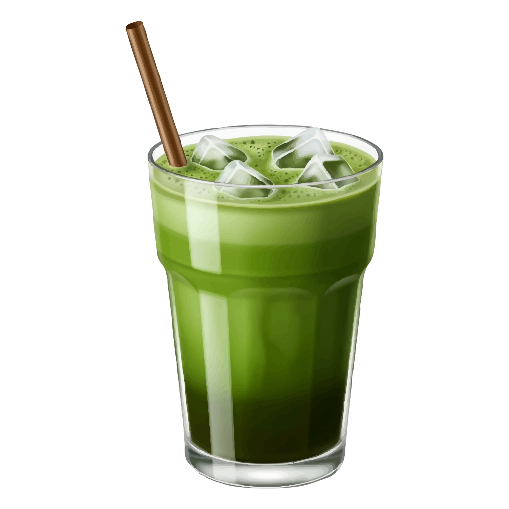
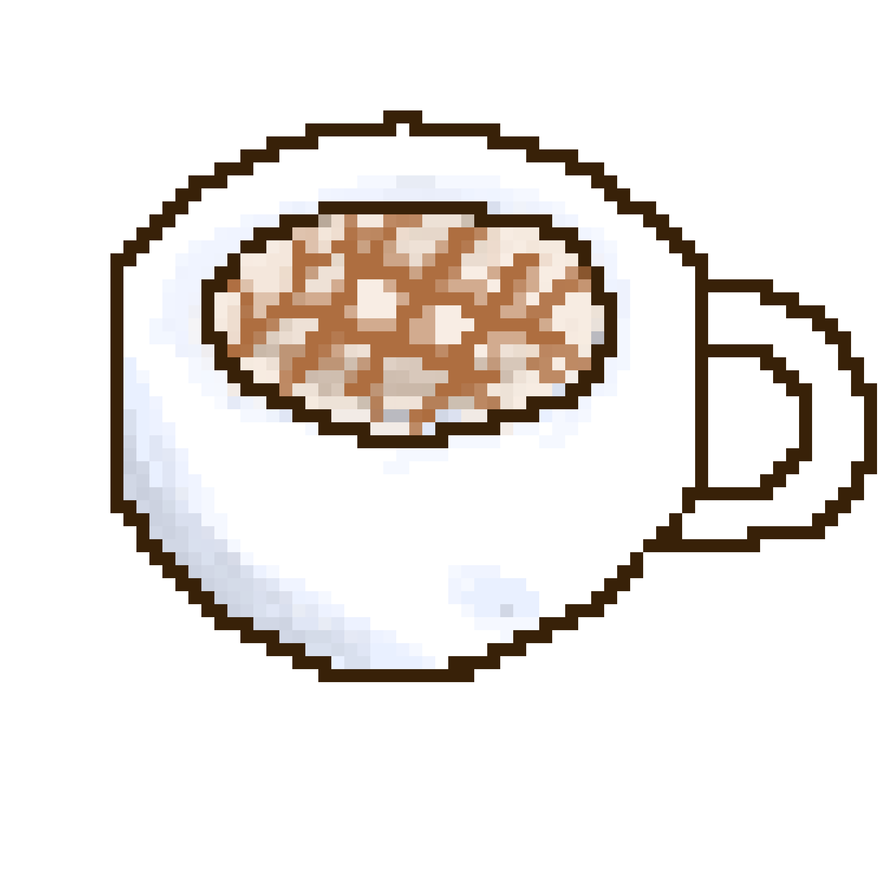
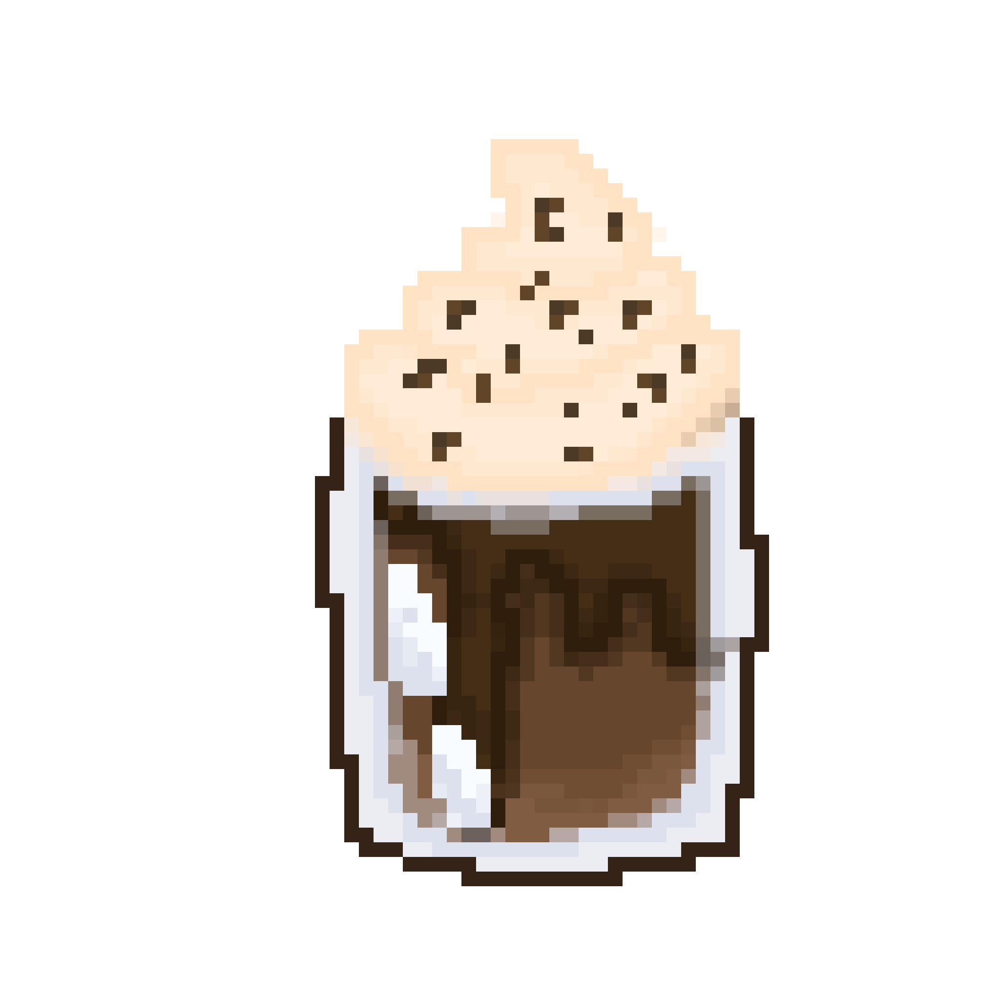

Home
Recipes
Contact
References
References 📚
Here are the sources we used for our recipes!
🐱

Iced Matcha Latte – An Easy Recipe
A Cozy Kitchen
https://www.acozykitchen.com/matcha-iced-latte

Iced Caramel Macchiato Recipe
The Cookie Rookie
https://www.thecookierookie.com/iced-caramel-macchiato-recipe/

Creamy Chocolate Frappe Recipe
Nestlé Goodnes PH
https://www.nestlegoodnes.com/ph/recipes/creamy-chocolate-frappe